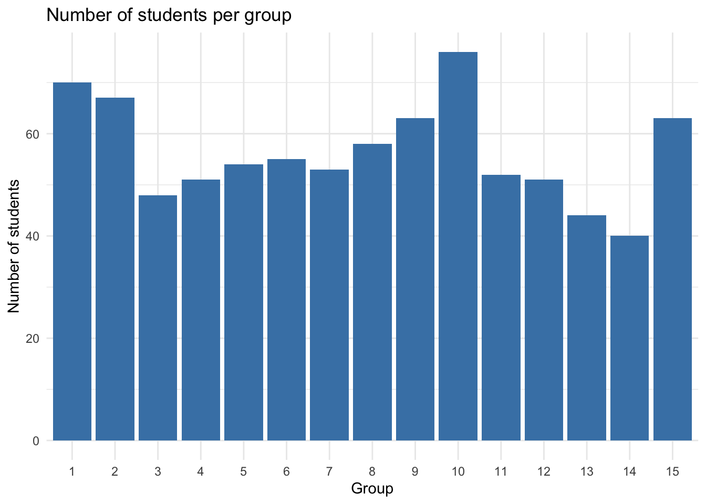
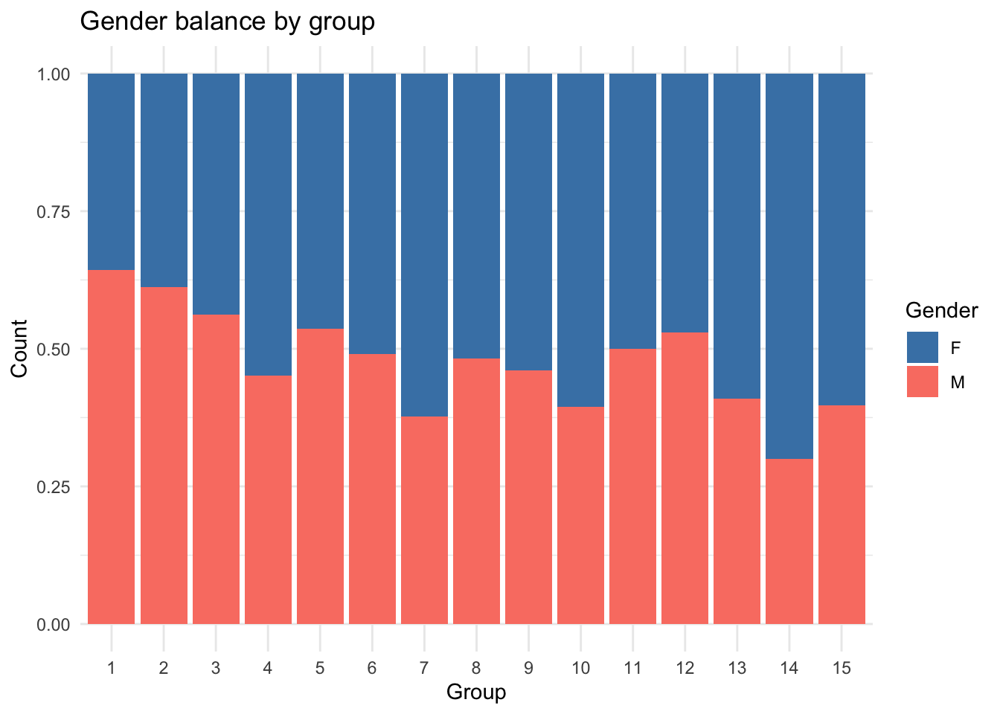
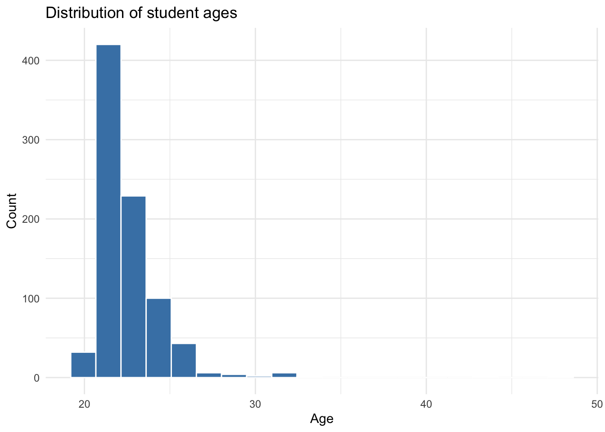
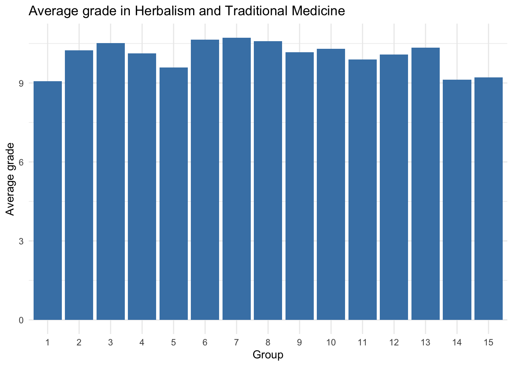
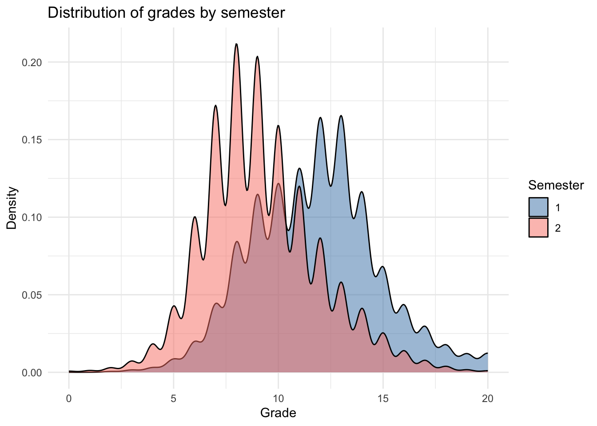
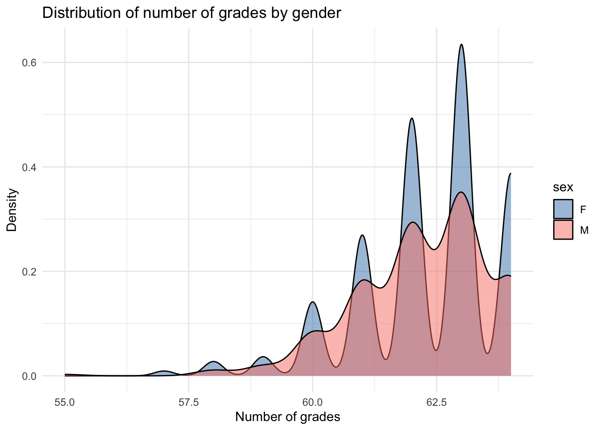
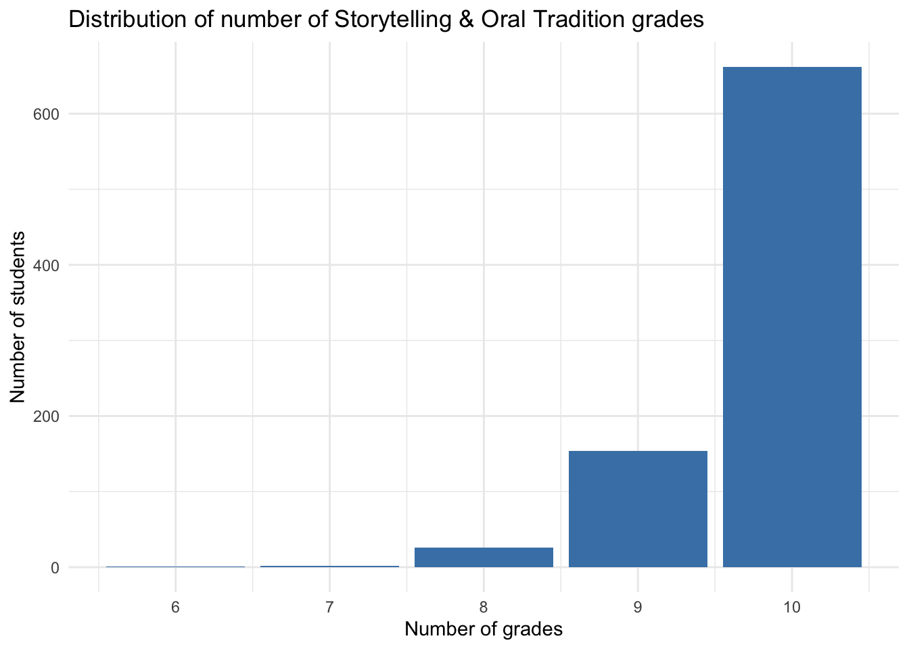
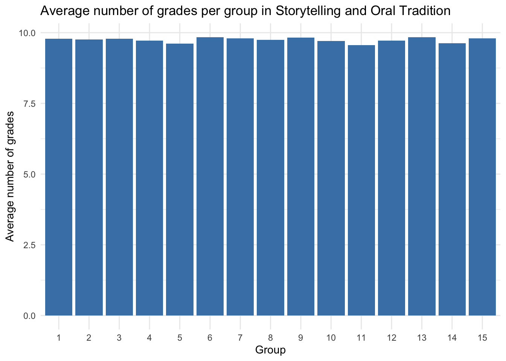
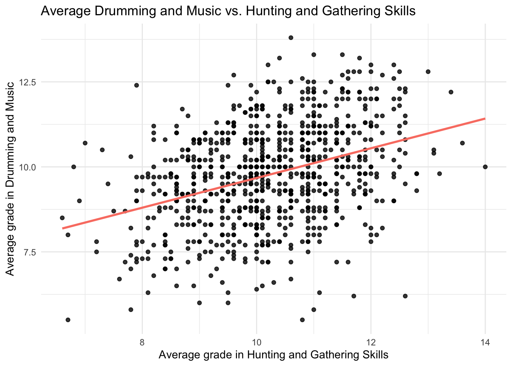
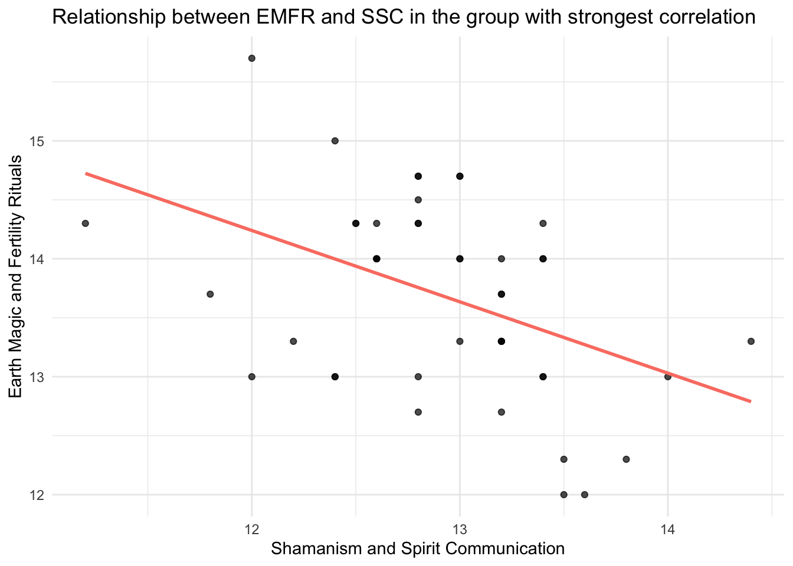

Code
here::i_am("grades-eval-adriel-mazere.Rproj")
library(here)
library(ggplot2)
library(dplyr)
library(tidyr)
library(readr)
library(knitr)
library(lubridate)From here you can access to the Github.
here::i_am("grades-eval-adriel-mazere.Rproj")
library(here)
library(ggplot2)
library(dplyr)
library(tidyr)
library(readr)
library(knitr)
library(lubridate)You are an independent contractor and you have been selected by the Dean of The Spirit Academy of the Savanna to analyse the performances of their students. For confidentiality issues, you had to travel to a mystical forest in the heart of Africa to get access to the data. But strangely, you are requested to use github to store your work. The ways of The Spirit Academy of the Savanna are mysterious…
At The Spirit Academy of the Savanna each student follows 10 different courses that are organised in 2 semesters. Students are divided into 15 groups. The number of grades per course depends on the course but also on the student as they may fail to attend to an exam. The names of the courses, their assignment to semesters and their number of exams are given in the courses.csv file which as the following columns:
• course: the name of the course
• course_id: a unique key to identify the course
• semester: the semester of the course
• nb_exams: the number of exams in the course
Question 1
Load the course description file.
courses <- here("data", "courses.csv") |>
read_csv() |>
mutate(
course = as.character(course),
course_id = as.integer(course_id),
nb_grades = as.integer(nb_grades),
semester = as.integer(semester)
)Question 2
Display the content of the file in a nicely formatted table in your document. Courses should be sorted in alphabetical order and column names should be written in English. This has to be done in R for instance using knitr::kable().
courses |>
arrange(course) |>
kable()| course | course_id | semester | nb_grades |
|---|---|---|---|
| Animal Lore and Totemism | 3 | 2 | 3 |
| Astronomy and Celestial Navigation | 8 | 2 | 8 |
| Drumming and Music | 4 | 2 | 6 |
| Earth Magic and Fertility Rituals | 9 | 1 | 3 |
| Herbalism and Traditional Medicine | 2 | 1 | 5 |
| Hunting and Gathering Skills | 7 | 2 | 8 |
| Martial Arts and Self-Defense | 10 | 1 | 6 |
| Shamanism and Spirit Communication | 1 | 1 | 5 |
| Storytelling and Oral Tradition | 5 | 2 | 10 |
| Tribal Law and Customs | 6 | 1 | 10 |
Students are described in the students.csv CSV file.
Students are uniquely identified by the id column. Their group is given by the group column which contains the unique identifier of the group. The birth_date column contains the birth date of the students. The sex gives the sex of each student (F or M). It is also highly recommend to have group loaded as a factor and id as an integer.
Question 3
Load the student data set. Make sure the birth dates are correctly identified as Date objects by including the class of the corresponding column in the rendered text. For instance, include a sentence of the following form:
The birth_date column of the students data frame is of class Date. Make also sure that the sex is identified as a factor.
students <- here("data","students.csv") |>
read_csv() |>
mutate(
group = as.factor(group),
id = as.integer(id),
birth_date = as.Date(birth_date),
sex = as.factor(sex)
)
paste("The", "birth_date", "column of the students data frame is of class",
class(students$birth_date))[1] "The birth_date column of the students data frame is of class Date"The grades are stored in the grades.csv CSV file. The first five rows of this data set are given in the following table:
The data set uses a long format with a small number of columns and a large number of rows. Each row gives the grade of a student for a course. Grades are between 0 (the worst) and 20 (the best). Students are identified by the id column which contains their unique identifier, while the course is identified by the course_id column which contains the unique identifier of the course.
Unfortunately, The Spirit Academy of the Savanna does not maintain very high data management standards and the grades.csv file is not perfectly encoded:
• rather than using a comma as the separator, the file uses the following character: :.
• rather than using NA to represent missing data, the file uses this: $.
Question 4 Load the grade data set despite the encoding issues.
grades <- here("data", "grades.csv") |>
read_delim(
delim = ":",
na = "$"
) |>
mutate(
id = as.integer(id),
course_id = as.integer(course_id),
grade = as.integer(grade)
)Question 5
Use a graphical representation to display the number of students per group.
students |>
count(group) |>
ggplot(aes(x = group, y = n)) +
geom_col(fill = "steelblue") +
labs(title = "Number of students per group",
x = "Group", y = "Number of students") +
theme_minimal()
Question 6
Show the gender balance in each group on a single graphical representation.
students |>
count(group, sex) |>
ggplot(aes(x = group, y = n, fill = sex)) +
geom_col(position = "fill") +
scale_fill_manual(values = c("lightblue", "salmon")) +
labs(title = "Gender balance by group",
x = "Group", y = "Count", fill = "Gender") +
theme_minimal()
Question 7
Show graphically the distribution of the age of the students.
students <- students |>
mutate(age = time_length(today() - birth_date, unit = "year"))
students |> ggplot(aes(x = age)) +
geom_histogram(fill = "steelblue", color = "white", bins = 20) +
labs(title = "Distribution of student ages",
x = "Age", y = "Count") +
theme_minimal()
Question 8
Compute the median age of the students in each group and include in your rendering a table giving the median age for each group. The median should be reported as an integer.
students |>
group_by(group) |>
summarise(median_age = round(median(age))) |>
select(group, median_age) |>
kable()| group | median_age |
|---|---|
| 1 | 22 |
| 2 | 22 |
| 3 | 22 |
| 4 | 22 |
| 5 | 22 |
| 6 | 22 |
| 7 | 22 |
| 8 | 22 |
| 9 | 22 |
| 10 | 22 |
| 11 | 22 |
| 12 | 22 |
| 13 | 22 |
| 14 | 22 |
| 15 | 22 |
Question 9
Build a table with the id, sex and age of the oldest student in each group. Sort the table by decreasing age order and include it in the rendering.
students |>
mutate(age = round(age)) |>
group_by(group) |>
filter(age == max(age)) |>
ungroup() |>
arrange(desc(age)) |>
select(id, sex, age) |>
kable()| id | sex | age |
|---|---|---|
| 787 | F | 48 |
| 755 | F | 44 |
| 491 | M | 33 |
| 59 | F | 32 |
| 367 | F | 32 |
| 552 | F | 32 |
| 632 | F | 32 |
| 268 | F | 31 |
| 289 | M | 27 |
| 569 | M | 27 |
| 579 | M | 27 |
| 198 | M | 26 |
| 262 | M | 26 |
| 362 | F | 26 |
| 417 | F | 26 |
| 650 | M | 26 |
| 698 | F | 26 |
Question 10
Give the number of grades in the data set directly in the text of your quarto file, in a sentence of the form “The data set contains xxx grades.” where xxx is replaced by the number of grades. This must be computed from the data set. Note that missing grades should obviously not be included in the total.
paste0(
"The data set contains ", grades |>
filter(!is.na(grade)) |>
nrow(),
" grades.")[1] "The data set contains 52614 grades."Question 11 Compute the average of all the grades in Herbalism and Traditional Medicine in each group and display graphically this average as a function of the group. It is recommend to use geom_col() for this task (read the documentation!).
grades |>
inner_join(courses, by = "course_id") |>
inner_join(students, by = "id") |>
filter(course == "Herbalism and Traditional Medicine") |>
filter(!is.na(grade)) |>
group_by(group) |>
summarise(avg_grade = mean(grade)) |>
ggplot(aes(x = group, y = avg_grade)) +
geom_col(fill = "steelblue") +
labs(
title = "Average grade in Herbalism and Traditional Medicine",
x = "Group", y = "Average grade") +
theme_minimal()
Question 12
Compare graphically the distribution of the grades of the 2 semesters.
grades |>
inner_join(courses, by = "course_id") |>
filter(!is.na(grade)) |>
ggplot(aes(x = grade, fill = factor(semester))) +
geom_density(alpha = 0.7) +
scale_fill_manual(values = c("steelblue", "salmon")) +
labs(
title = "Distribution of grades by semester",
x = "Grade",
y = "Density",
fill = "Semester") +
theme_minimal()
Question 13
Compute the number of grades per student and include in your quarto rendering an extract of the resulting data frame. Make sure to keep in the data frame the id of the students but also their group and their sex. Include in the text a markdown table with the minimum, maximum, average and median number of grades per student.
grades |>
filter(!is.na(grade)) |>
count(id, name = "n_grades") |>
inner_join(students, by = "id") |>
select(id, group, sex, n_grades) |>
slice_sample(n=10) |>
kable()| id | group | sex | n_grades |
|---|---|---|---|
| 381 | 12 | F | 61 |
| 402 | 10 | M | 63 |
| 324 | 5 | F | 62 |
| 572 | 2 | M | 63 |
| 736 | 6 | M | 62 |
| 816 | 11 | F | 64 |
| 488 | 14 | F | 61 |
| 161 | 15 | F | 64 |
| 720 | 5 | M | 59 |
| 101 | 12 | M | 64 |
grades |>
filter(!is.na(grade)) |>
count(id, name = "n_grades") |>
summarise(
min = min(n_grades),
max = max(n_grades),
mean = round(mean(n_grades),1),
median = median(n_grades)
) |>
kable()| min | max | mean | median |
|---|---|---|---|
| 55 | 64 | 62.3 | 62 |
Question 14
Compare graphically the distribution of the number of grades for female and male students.
grades |>
filter(!is.na(grade)) |>
count(id, name = "n_grades") |>
inner_join(students, by = "id") |>
ggplot(aes(x = n_grades, fill = sex)) +
geom_density(alpha = 0.5) +
scale_fill_manual(values = c("steelblue", "salmon")) +
labs(title = "Distribution of number of grades by gender",
x = "Number of grades", y = "Density") +
theme_minimal()
Question 15
Create a data frame that gives for each student their id, their group and the number of grades they obtained in Storytelling and Oral Tradition and include in the quarto rendering a small extract of the result.
storytelling <- grades |>
inner_join(courses, by = "course_id") |>
inner_join(students, by = "id") |>
filter(course == "Storytelling and Oral Tradition") |>
filter(!is.na(grade)) |>
group_by(id, group, sex) |>
summarise(n_grades = n()) |>
ungroup()
storytelling |>
slice_sample(n = 10) |>
kable()| id | group | sex | n_grades |
|---|---|---|---|
| 712 | 1 | F | 10 |
| 287 | 1 | M | 10 |
| 236 | 5 | F | 9 |
| 399 | 1 | F | 10 |
| 681 | 1 | F | 10 |
| 363 | 10 | F | 10 |
| 447 | 15 | F | 10 |
| 379 | 9 | M | 10 |
| 536 | 12 | M | 9 |
| 588 | 2 | M | 10 |
Question 16
Compute from the previous data frame the distribution of the number of grades, that is for each number of grades (e.g. 10) the number of students who have exactly this number of grades in Storytelling and Oral Tradition. Represent graphically the results.
storytelling |>
count(n_grades) |>
ggplot(aes(x = n_grades, y = n)) +
geom_col(fill = "steelblue") +
labs(
title = "Distribution of number of Storytelling & Oral Tradition grades",
x = "Number of grades",
y = "Number of students") +
theme_minimal()
Question 17
Using a graphical representation to study whether the number of grades per student in Storytelling and Oral Tradition depends on the group.
storytelling |>
ggplot(aes(x = factor(group), y = n_grades)) +
geom_boxplot(fill = "steelblue", alpha = 0.7) +
labs(
title = "Distribution of number of grades in Storytelling and Oral Tradition by group",
x = "Group",
y = "Number of grades"
) +
theme_minimal()
The distribution of the average number of grades per group does not seem to depend on the group. Indeed, all median seem to revolve around 10 and the ranges are approximately similar.
Question 18
Take the analysis of the previous question one step further to see if there is a dependency of the number of grades with respect to both the group and the sex of the students.
storytelling |>
ggplot(aes(x = group, y = n_grades, fill = sex)) +
geom_boxplot(alpha = 0.7) +
scale_fill_manual(values = c("steelblue", "salmon")) +
facet_wrap(~ sex) +
labs(
title = "Distribution of grades by group,\nseparately for each sex",
x = "Group", y = "Number of grades"
) +
theme_minimal()
The conclusion is identical to the previous question: there does not seem to be any pattern variation between groups and whether the student is male or female.
Question 19
Create a data frame that gives for each student their id, their group and the average of grades they obtained in each course. Using an adapted pivoting method, create a new data frame with one row per student and 12 columns: one for the id, one for the group and one per course. Include in the quarto rendering a small extract of the data frame with the id and group columns and with two of the course columns.
avg_per_course <- grades |>
inner_join(courses, by = "course_id") |>
inner_join(students, by = "id") |>
filter(!is.na(grade)) |>
group_by(id, group, course) |>
summarise(avg_grade = round(mean(grade),1)) |>
ungroup() |>
pivot_wider(
names_from = course,
values_from = avg_grade
)
avg_per_course |>
select(id, group, 3,4) |>
slice_sample(n = 10) |>
kable()| id | group | Animal Lore and Totemism | Astronomy and Celestial Navigation |
|---|---|---|---|
| 567 | 2 | 10.3 | 9.1 |
| 577 | 9 | 7.0 | 9.5 |
| 89 | 2 | 7.3 | 9.5 |
| 461 | 12 | 11.7 | 9.5 |
| 297 | 8 | 14.0 | 9.6 |
| 65 | 9 | 9.3 | 10.6 |
| 387 | 10 | 13.7 | 9.5 |
| 374 | 1 | 11.7 | 9.1 |
| 608 | 8 | 12.3 | 9.9 |
| 565 | 7 | 7.7 | 9.1 |
Question 20
Show the average grades in Drumming and Music as a function of the average grades in Hunting and Gathering Skills. Make sure to maximize the readability of the proposed representation.
avg_per_course |>
ggplot(aes(x = `Hunting and Gathering Skills`,
y = `Drumming and Music`)) +
geom_point(alpha = 0.8, color = "black") +
geom_smooth(method = "lm", formula = 'y ~ x', se = FALSE, color = "salmon") +
labs(
title = "Average Drumming and Music vs. Hunting and Gathering Skills",
x = "Average grade in Hunting and Gathering Skills",
y = "Average grade in Drumming and Music"
) +
theme_minimal()
There seems to be a positive correlation between the average grades in Hunting and Gathering Skills and the average grades in Drumming and Music. This implies that a student having a high average grade in one is highly likely to also have a high grade in the other.
Question 21
The cor() function computes the correlation coefficient between two vectors. It can be used as a summary function in dplyr. Using it, compute the correlation between the average grades in Earth Magic and Fertility Rituals and the average grades in Shamanism and Spirit Communication group by group.
avg_per_course |>
group_by(group) |>
drop_na() |>
summarise(
corr = cor(`Earth Magic and Fertility Rituals`,
`Shamanism and Spirit Communication`)
) |>
kable()| group | corr |
|---|---|
| 1 | 0.0914069 |
| 2 | -0.1791018 |
| 3 | -0.4303042 |
| 4 | 0.0473104 |
| 5 | -0.2060071 |
| 6 | 0.0073480 |
| 7 | -0.2552212 |
| 8 | -0.2571894 |
| 9 | -0.1011056 |
| 10 | -0.2150655 |
| 11 | -0.1164424 |
| 12 | -0.2189203 |
| 13 | -0.4316472 |
| 14 | 0.1709688 |
| 15 | -0.1343181 |
A negative correlation inside a group implies that if a student has higher grades in Earth Magic and Fertility Rituals, it’s highly likely that he has lower ones in Shamanism and Spirit Communication, and vice-versa. For some classes, the correlation is weak (when it tends to \(0\)) and for some others it’s stronger (it tends to \(|1|\)).
Question 22
Display the average grades in Earth Magic and Fertility Rituals (EMFR) as a function the average grades in Shamanism and Spirit Communication (SSC) for the students of the group in which those grades are the most correlated (positively or negatively).
avg_per_course |>
group_by(group) |>
drop_na() |>
mutate(
corr = cor(
`Earth Magic and Fertility Rituals`,
`Shamanism and Spirit Communication`)
) |>
ungroup() |>
filter(abs(corr) == max(abs(corr), na.rm = TRUE)) |>
ggplot(aes(
x = `Shamanism and Spirit Communication`,
y = `Earth Magic and Fertility Rituals`
)) +
geom_point(color = "black", alpha = 0.7) +
geom_smooth(method = "lm", formula = 'y ~ x', se = FALSE, color = "salmon") +
labs(
title = "Relationship between EMFR and SSC in the group with strongest correlation",
x = "Shamanism and Spirit Communication",
y = "Earth Magic and Fertility Rituals"
) +
theme_minimal()
The group with the strongest negative correlation has \(-0.43\). Therefore, we confirm the correlation graphically. We can however note that it might not be very significant due to the low number of observations.
Question 23
Let us assume that the final grade of a student is the average of the averages of their grades for each course. Create a data frame with four columns, id, group, sex and final grade based on this definition for the last column. Sort the data frame in decrease order of final grade and include in the quarto rendering its first five rows.
Question 24
Find a way to study differences in final grades between groups.
Question 25
Include in the analysis conducted in the previous question the effect of sex.
Question 26
To pass the year, a student must fulfil the following conditions:
• have no average grade in a course lower than 5;
• have an average grade in each semester larger or equal to 10 (the average in a semester is simply the average of the average grades of the courses in the semester).
Create a data frame that gives for each student their id, their group, their final grade (as defined before) and a pass variable equal to TRUE if the student pass the year (and FALSE if they do not).
Question 27
Compute and display the number of students who do not pass and yet have a final grade larger or equal to 10.
Question 28
Compute the pass rate per group and represent it graphically.
Question 29
Determine the course that is the most responsible of student failure owing to grades below than 5.
Question 30
Display the effect of age on success. The goal is not to display the average age for students who passed but to show the success rate as a function of student age.